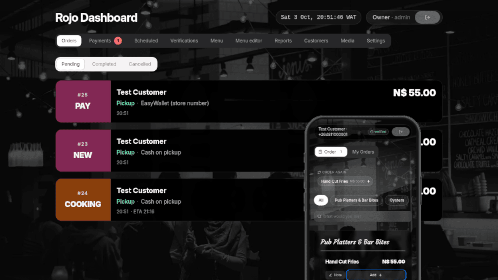
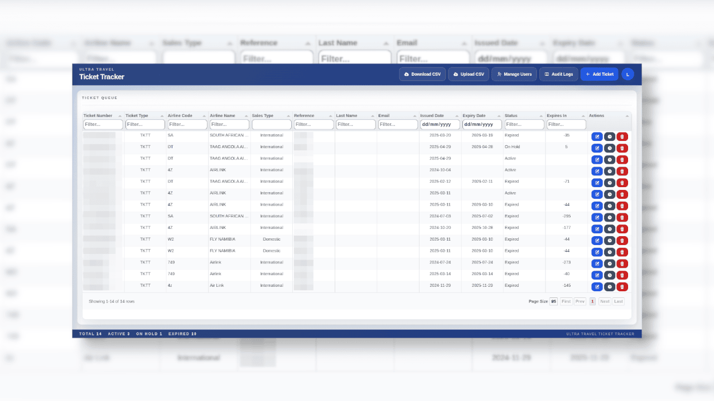
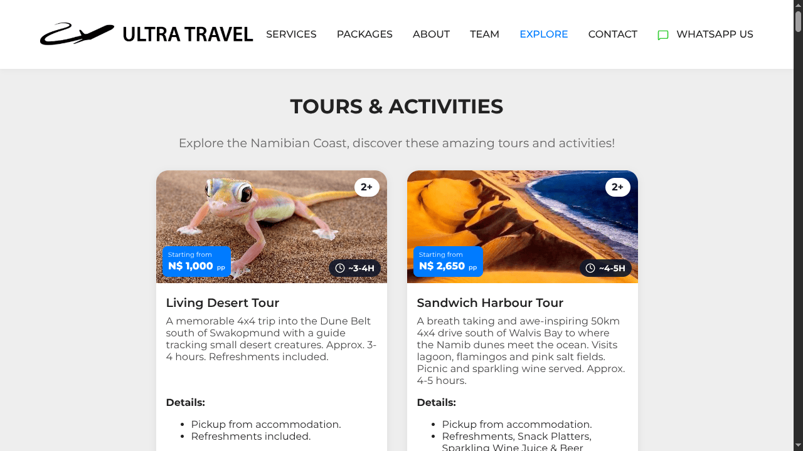
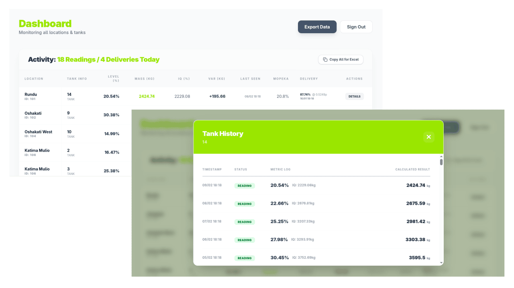
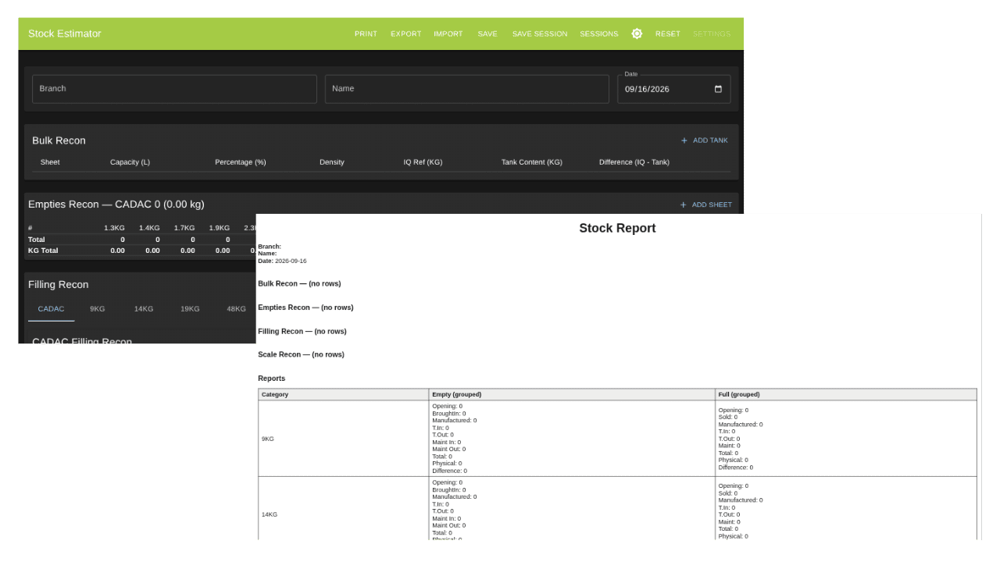
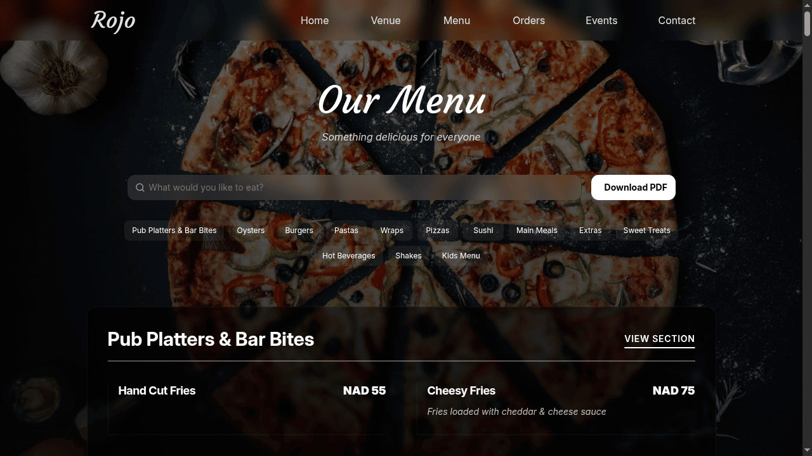
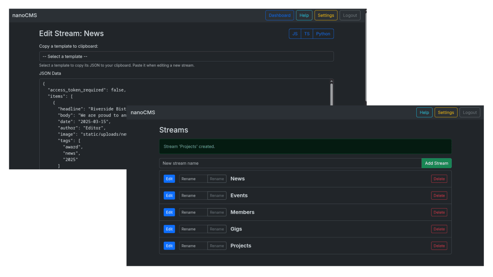

Erongo Software architects and builds the software your business
runs on. We develop custom tools, applications, integrations, APIs and automation
to suit your unique needs. One partner from the first review to
deployment and operation. Based in Namibia, delivering worldwide.
Most companies can describe what they need. Few get software that actually delivers.
You should be free to focus on what matters most. Turn to us for advice, solutions, integration and automation to help further your business goals.
Early project stage
Technical Consultation
Technical direction for projects with unclear requirements. We perform architecture reviews, build-vs-buy decisions, and technical due diligence.
Architecture and technology reviews
Build-vs-buy analysis and vendor evaluation
Technical due diligence
Design through operation
Software Delivery
Internal software and business systems, designed and built end to end. We take responsibility from the data model through deployment and hand-over.
Full-stack web applications and tooling
Data modeling, schema design, and migration
Cloud deployment, CI/CD, and operational tooling
System connections
Integrations and APIs
Software connected to databases and third-party platforms. We construct APIs designed to keep those integrations stable.
REST and event-driven API design
Third-party and legacy system integrations
Data synchronization and pipeline workflows
Streamline repetitive work
Automation and Applied ML/AI
Repetitive work replaced with automation, and AI features such as search, extraction, and RAG added where they reduce manual effort.
Business process automation and orchestration
Retrieval-Augmented Generation (RAG) and agentic systems
Document extraction, classification, and semantic search
On-prem model serving — LLM and OCR inference on our own hardware, for data that stays in your network
Workflow
What does that mean in practice?
From abstract technical terms to concrete fundamentals,We plan, build, connect, and automate.
01
Plan
Technical Consultation
Reviews. What works, what is fragile, what to fix first.
Build vs buy. The real cost of custom versus existing, vendors vetted before you sign.
Roadmap. Stages with clear checkpoints and costs.
02
Build
Software Delivery
Applications. The screens your team sees and the systems behind them, built as one product.
Data. Organized to stay accurate, with existing records moved across safely.
Operations. Online, self-updating, and watched so issues get fixed before customers notice.
03
Connect
Integrations and APIs
APIs. Reliable connection points so systems share information the moment it changes.
Legacy. The software you already rely on, connected into your ecosystem. No more double entry.
Synchronization. Information kept consistent across every system, automatically.
04
Automate
Automation and Applied AI
Process automation. The repetitive handwork happens on its own or with minimal oversight.
AI assistants. Answers drawn from your own documents, acting under rules you set.
Documents and search. Paperwork read, sorted, and found by meaning, not exact keywords.
Beyond launch. Systems keep growing with the business. With new features scoped and built as needs evolve.
Have an existing project with us?
Please sign in to view our progress. Check your milestones, deliverables, and invoices. All updated as we work.
Project TrackerLive project status, milestones, and deliverables
“
We need a system that keeps an accurate picture of stock across our stores and warehouse, and tells us when to reorder before we run out.
Engagements
Typical investment
Every project is scoped before anything is quoted. The cost bands below are a sense-check to help you gauge whether our services fit your budget.
A
Automation sprints
Low cost · 2-6 weeks
One painful process, automated end to end. Reporting, invoicing, follow-ups, data pipelines, or document handling.
B
Internal tools
Medium cost · 1-2 months
Dashboards, inventory and order systems, or customer portals used by your team on a daily basis.
C
Full platforms
High cost · phased, 4-6 months
Multi-system builds with integrations, data migration, and ongoing operation. Delivered in phases.
D
Technical consultation
Low cost · 1-3 weeks
Architecture reviews, build-vs-buy analysis, and technical due diligence. Helps provides guidance and direction before you commit resources.
E
Integrations and APIs
Low cost · 3-6 weeks
Systems that don't talk, connected. For legacy software, third-party platforms, and data that needs to be kept in sync automatically.
F
Applied ML/AI features
Medium cost · 3-6 weeks
AI assistants grounded in your own documents, extraction, and semantic search, process automation, or machine learning tooling added systems you already run.
Get a rough idea of scope, complexity, and a ballpark investment before you reach out.
Hourly, milestone-based, and fixed-price engagements are all supported. Not sure which bucket you are in? Scope it yourself with the project wizard.
Delivery
How delivery works
To help us deliver quality software, all our projects follow the same pipeline.
1
Scope & Agree
Requirements, business processes, deliverables, timeline and terms are all
agreed in writing before anything is built, including the acceptance
criteria each milestone must meet, so a green light is objective.
2
Code In Your Repo
The codebase lives in your organisation from day one.
We push work directly to the repository owned by you, so the history is yours to audit at any time.
3
Live Milestone Demo
At every milestone you get a live build to inspect and perform acceptance testing against. Green light means it is
tagged and invoiced, and the next milestone starts.
4
Handover & Warranty
Final deliverables, documentation, credentials and knowledge transfer to you and your team then a
30-day defect-fix warranty, and optional support or an SLA after that.
Milestones repeat until the project is wrapped up and handed over.
We like to keep things fair
Rejections. If a build fails the agreed criteria, rework is on us. If you want something new, that is a change request.
Change requests. Written estimate first, your sign-off second, rebaselined timeline after. We don't want scope to start drifting silently.
Feedback Period. No response within 5 business days and the milestone is deemed accepted, or work pauses and the timeline extends.
Termination. If you stop early, you keep everything you have paid for, and we are paid for the work completed up to that point.
IP. You own the custom code. We retain our pre-existing tooling, and third-party libraries follow their own licenses.
Payments. A 30% deposit at signing covers discovery and setup; the rest is invoiced per accepted milestone.
Products
Our commercial software
Besides building custom software for businesses, we develop our own commercial applications. As internal tools and projects mature into stand-alone products, we make them available for testing.
oms
Organisational Governance
Private Beta
pms
Property & Rental Control
Private Beta
qms
Managed QR Code System
Private Beta
ams
Advanced Asset Register
Private Beta
Need to manage your subscriptions and services?
Please sign in for self-service. Update subscriptions, access services, review licenses, manage API tokens, and open support requests.
Solution built across energy, travel, food service, finance and infrastructure.

Food Service · Sales
Online Takeout System for Rojo Pub & Restaurant
An easy to use online takeout app for customers to order, pay with multiple methods, and track real-time order status. Also paired with a staff dashboard for live menu updates and order management.
A multi-page property management platform for short-term and long-term rentals: manage properties, tenants, bookings, and requests from a role-gated dashboard with a tenant portal.
An embedded and easily updateable price guide that lists per-town retail LPG prices on Central Gas Namibia's public website, with schema.org markup so search engines read every price correctly.
High performance, responsive fleet tracking operations dashboard that ingests live telemetry through Kafka, projects fleet state into Redis, and surfaces actionable alerts for rental vehicles.
End-to-end delivery of a Cost-Price-Quote platform for a Namibian ICT company, deeply integrated with their existing warehouse and business management systems.
PythonFlaskReactAzureMSSQL

Travel · Operations
Air Travel Ticket Tracking System
Role-gated dashboard that replaced manual ticket records for Ultra Travel Centre: CSV import, audit logging, rate limiting and a test suite, running on a $4 droplet with runbooks for every deploy.
PythonFlaskSQLiteTailwind
Travel · Sales
Travel Agency Package Generator
Promo-material automation for non-technical travel agents: enter dates, destinations and extras, drop in images, and export standardized package promos for social and print.
ReactTypeScriptMUI

Travel · Content
Travel Agency Coastal Promotion Template
Custom content page promoting coastal attractions to guests. Designed as a reactive template and CMS-ready.
ReactTypeScriptCMS
Energy · Logistics
Delivery Estimation Tool
Calculates range costs and delivery windows, and suggests optimal packing for deliveries from geospatial data. Dispatch teams plan routes and levy charges accordingly.
TypeScriptReactViteLeaflet
Energy · Supply Chain
Fuelstock Forecast Engine
Demand forecasting for LPG depots: three models, rolling average, Holt-Winters and XGBoost, predict when each depot runs dry, with results published to Prometheus and Grafana.
PythonXGBooststatsmodelsPrometheus

Energy · Operations
Depot Readings Aggregation
Lightweight portal for field staff at remote LPG depots: daily tank readings and delivery reports in, an aggregated dashboard with drill-down history and CSV export out. Edge-hosted, with no servers to run.
Vue 3Cloudflare WorkersTailwind

Energy · Operations
Stock Recon Tool
Inventory reconciliation for day-to-day LPG stock records, from cylinder counts to depot-level stock, kept straight by the people who move the stock.
ReactTypeScriptVite

Food Service · Web
High Performance Website Menu
The website and website menu for Rojo Pub & Restaurant at the Walvis Bay Yacht Club: landing, menu, events, venue and contact. A static React build tuned to be fast on shared hosting, with the full SEO kit.
ReactNextUITailwindFramer Motion

Content Management · Delivery
Custom CMS
A lightweight CMS written in Python using Flask. It is designed for simplicity, low hosting requirements, and easy integration with static sites.
PythonFlaskTailwindYAML
2 / 16
9,000+
Development hours
Written, tested and deployed across client and product work over the last seven years.
Seven years of shipping
2,700+
Automated tests
Across our internal ecosystem of software, they run on every change, so a fix today does not break a feature tomorrow.
Green before it ships
36
Numbered runbooks
Every operational procedure documented, rehearsed and versioned, from hardening the first server to rolling out a new service.
Backups tested monthly
Experiments
Technical experiments & demos
A collection of personal projects exploring new technologies, patterns, and ideas.
Accessibility · Live Captions
Tolk Experimental
An experimental tool that helps public speakers provide live subtitles to deaf and hearing-impaired audiences — turning speech into big, readable on-screen captions in real time, with an offline mode and a projector-friendly view.
The person who scopes your project is the person who builds it, runs it, and answers when something needs attention.
Marthinus
Founder & Developer
14 years of programming, 7 of that delivering software directly to clients. From first review to production and beyond. No account managers, no handoffs, no runaround: you get one accountable person, from day one to year three.
Despite incredible advances in the industry, the hardest work still lies in piecing together institutional knowledge from often incomplete and disjointed sources. For the foreseeable future, our biggest challenge will remain understanding people and building human-centric software.
All deliverables are yours from day one. You retain full ownership of everything produced.
A working vertical slice demo is delivered at every milestone, instead of a promise at the end.
Direct line to the person building the software. Available over WhatsApp, email, or a ticket
No lock-in. If we ever stop being the best choice, you leave with everything.
Have a problem worth solving?
Send your requirements, or scope it yourself with the project wizard.
After a meeting to discuss your requirements, you'll have the written scope, timeline, and cost within 2-4 business days.